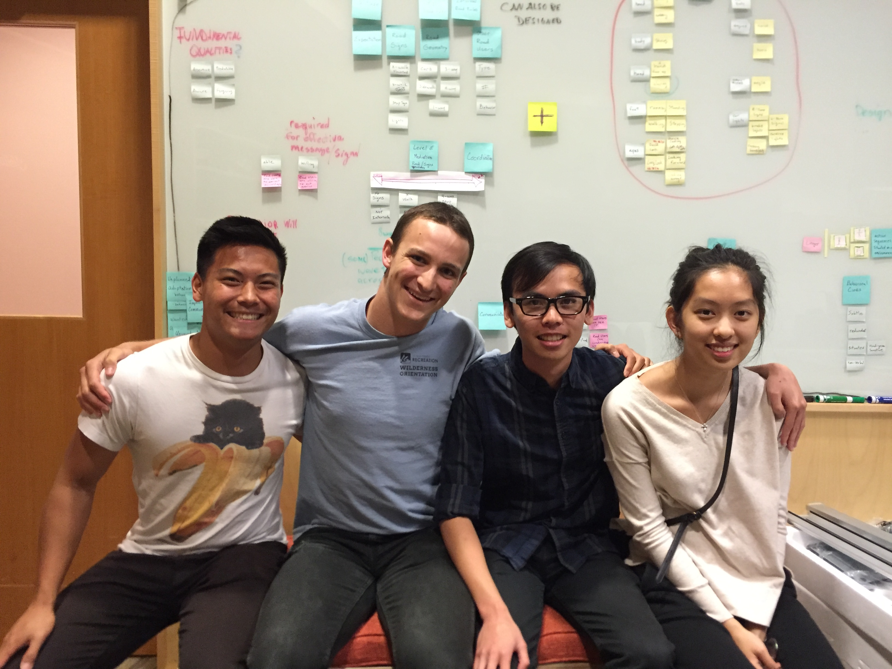

« Back to Projects Next Project »
MatchMaker
The Design Lab @ UCSD
TEAM Grant Chinn, Marlo Daniel Boticano, Joel Rosenthal).
ROLE Participated in brainstorming, competitive analysis, research planning, and user interviews. Created a potential syllabus and digital version of our proposed journey map and flow chart.
OVERVIEW
Matchmaker is a student-industry partnering service provided by the UC San Diego Design Lab. Under the guidance of Design Lab advisors, students geared towards design and human-computer interaction gain real-world experience by undertaking projects presented by industry clients. Students may be tasked with conducting interviews, usability testing, and visioning sessions, along with many other skill-building activities.
RESEARCH
Competitive Analysis
We started with competitive analysis of different universities throughout the country that offers students real world connections in the design industry. We interviewed schools like Berkeley, Stanford, University of Michigan to gain insights on how to provide this service for undergraduates.
PROJECT SCOPING and ITERATING
Our client was the Design Lab and the university, which made it extremely difficult to scope our project. We ended up spending the entire quarter iterating our original research plan, and had to interview more and more stakeholders along the way, including San Diego startup companies, professors, and design students.
Stakeholder Interviews
Website still being updated!DELIVERABLES
Website still being updated!THE TEAM
« Back to Projects Next Project »